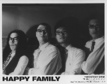

| Artist: | Happy Family |
| Title: | Toscco |
| Label: | Cuneiform Rune 93 |
| Length(s): | 55 minutes |
| Year(s) of release: | 1997 |
| Month of review: | 06/1997 |
| 1) | The Great Man | 3.01 |
| 2) | Overdrive Locomotive | 6.31 |
| 3) | Nerd Company Vs. Lead Company | 5.19 |
| 4) | Filial Piety At The Dawn | 4.03 |
| 5) | The Sushi Bar (with Bad Face, Bad Manners, | 11.42 |
| And Bad Taste) | ||
| 6) | He Is Coming At Tokyo Station | 3.50 |
| 7) | The Picture Book - X Rated | 6.29 |
| 8) | The Three Leaves Insect | 12.19 |
| 9) | The Great Man (revisited) | 1.25 |
All sound samples from Tossco appear here by permission of Cuneiform Records.
The next one, Nerd Company vs. Lead Company starts out as a march, but fortunately isn't the less complex for it. Again, the sound is heavy, driving and complex with bubbling keyboard spicings.
Filial Piety at the Dawn can be a very playful track with quircky keyboards contrasted with the same hard-edged but not too chaotic sound.
The long The Sushi Bar (...) starts out with piano and continues into a droning piece still with piano and low frequency sounds. A sort of a slow motion jazz lounge music is evoked and what probably is the Sushi Bar. After a few minutes the music erupts into an part with heavy drums and enticing melodies after which some playful marimba takes the lead. Towards the middle there is a high energy plodding part with percussive piano and busy drumming as always. The high keyboard squeals at this point evoke a space rock sound. After a particularly hard-edged part, the percussive quiet piano returns and a prominent bassline accompanies the song on its way out. Very good one.
He Is Coming At Tokyo Station is a threatening track with what seems to be a sax sound (often heard in this line of music, although I can't spot a player so I assume it's keyboard controlled). It moves right into The Picture Book - X Rated. Great riffs, a nice heavy sound and complexity all for you. Brings out the best of the all-consuming THRaK(aTTaK) sound of King Crimson. Again that percussive piano sound that we all love.
The Three Leaves Insect is another of those orgiastic tracks brimming with energy, full of fire. Also, some mood swings in this track, make it an interesting composition to listen to.
The closer is an instrumental ditty that recalls themes from the first track, played on accordeon and acoustic guitar, yielding our first breather since that first track.